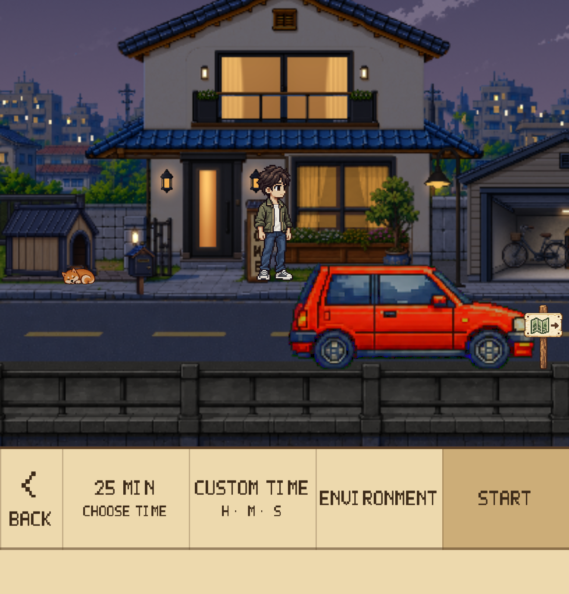
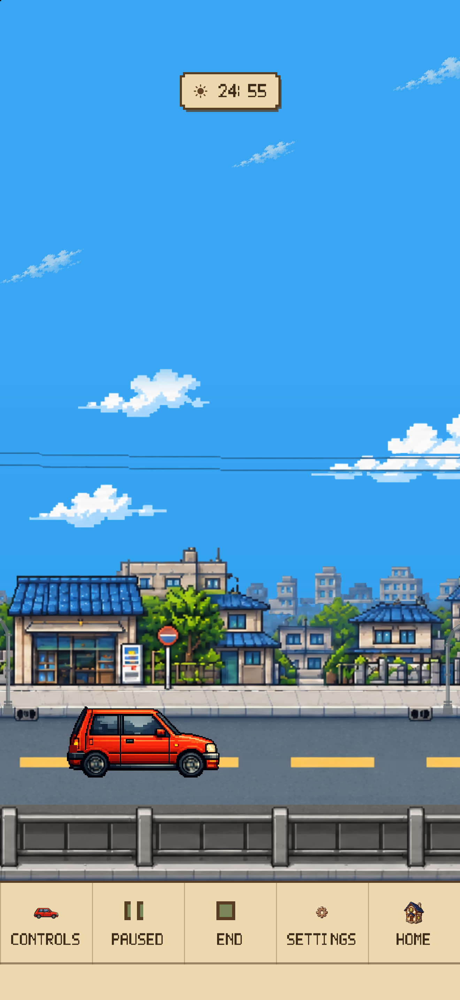
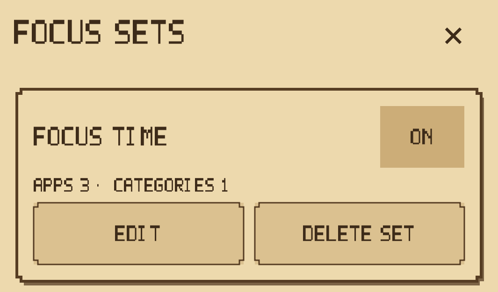
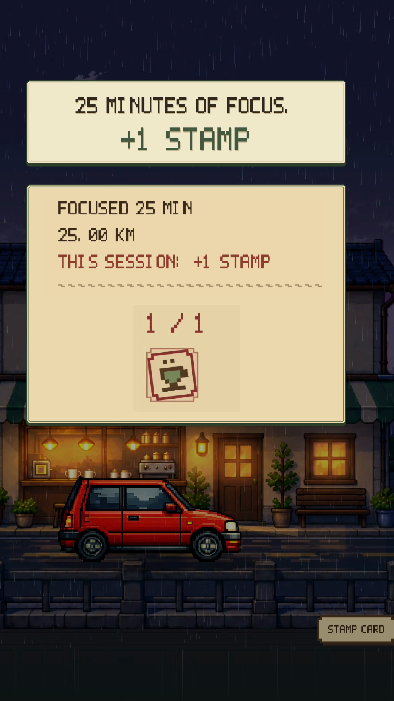
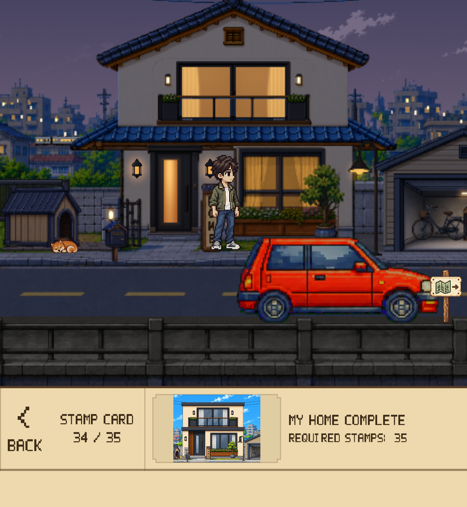
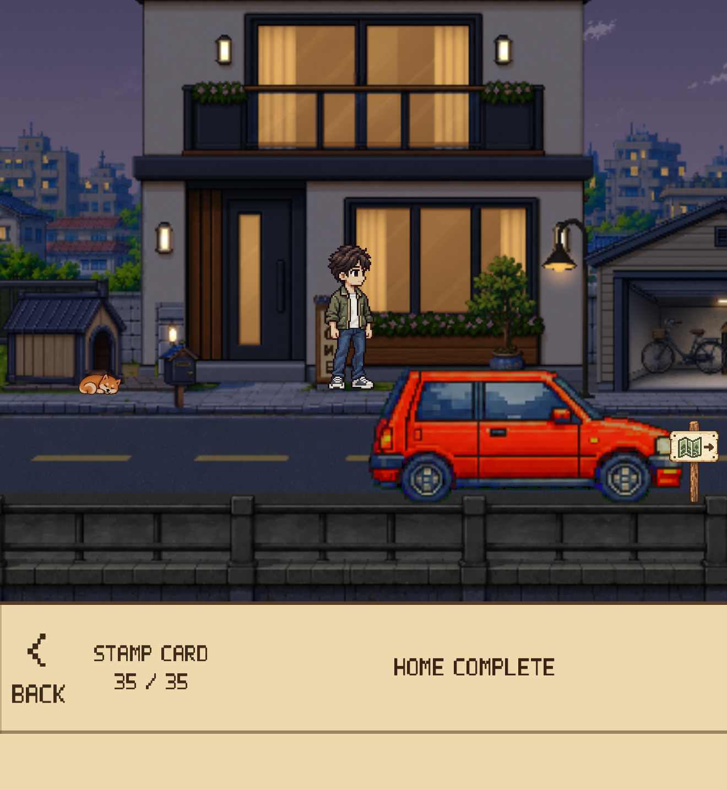

Set a duration → Start
Open the drive menu from Home, choose your focus duration, then set off.
An iPhone focus timer for study, reading, and work.

Dayroad is an iPhone focus timer for making room to study, read, or work. Choose a duration and set off: a car travels through a pixel city while you stay with your task. Accumulated focus earns Stamps that you spend yourself to grow your Home.
Released October 23, 2026
iPhone Focus Timer
For moments when getting started feels difficult or another app pulls your attention away. Set aside one session to stay with your study, reading, or work.

Open the drive menu from Home, choose your focus duration, then set off.

The car drives automatically while the timer runs. There is no steering to do, so your attention can stay on your task.

Optionally block selected apps and categories. Screen Time permission is required.
Website blocking is not supported in version 1.0. A Lock Screen Live Activity shows the remaining time, with a completion alert when the session ends. Availability depends on your device and notification settings.
There is no car to steer. Set a duration, then give your attention to your task. Side-on streets and a top-down driving view, clear afternoons and rainy evenings bring a change of scenery to familiar routines.


Pixel streets, passing scenery, and music set a gentle mood. Dayroad becomes a quiet backdrop for time spent focusing and moments spent taking a break.
Complete your focus and earn one Stamp for every 25 accumulated minutes. Save enough, then spend Stamps yourself to unlock the next Home stage. Growth is not automatic.

An actual 25-minute completion screen. Every 25 accumulated focus minutes earns one Stamp.

Save the required Stamps, then choose to spend them to unlock the next Home stage.

A Home that grows through 35 stages is designed to give your next session a small goal to look forward to.
Focus → Drive → Finish & Stamps → Manual unlock → Home growth → Next focus
Every 25 accumulated minutes of focus earns one Stamp. Save the Stamps needed for the next stage, then spend them to unlock it. From a small beginning through 35 stages, your Home becomes a visible trace of time well spent.


Visible progress and the prospect of the next Home upgrade are designed to give users a small reason to begin another focus session.
Free Drive stays free, with no time limit. It does not award focus rewards.
Try Focus Drive, set against Japanese scenery, for 75 cumulative minutes. After that, a one-time Focus Drive Pass purchase unlocks continued access. There is no subscription, auto-renewal, or automatic charge when the trial ends.
The pass covers the current Japan-themed Focus Drive. Future regions may be sold separately. Check the App Store for your current local price before purchasing.
See the App Store for supported devices and compatibility details.
Dayroad developer
See MEDIA-USE.txt in the package for media usage terms.